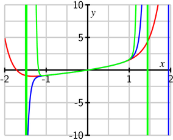

{In this section, we strive to understand the ideas generated by the following important questions:
What is a power series?
What are some important uses of power series?
What is the connection between power series and Taylor series?
}
Subsection8.6.1Introduction
We have noted at several points in our work with Taylor polynomials and Taylor series that polynomial functions are the simplest possible functions in mathematics, in part because they essentially only require addition and multiplication to evaluate. Moreover, from the point of view of calculus, polynomials are especially nice: we can easily differentiate or integrate any polynomial. In light of our work in Section 8.5, we now know that several important non-polynomials have polynomial-like expansions. For example, for any real number \(x\),
As we continue our study of infinite series, there are two settings where other series like the one for \(e^x\) arise: one is where we are simply given an expression like
\[
1 + 2x + 3x^2 + 4x^3 + \cdots
\]
and we seek the values of \(x\) for which the expression makes sense, while another is where we are trying to find an unknown function \(f\), and we think about the possibility that the function has expression
and we try to determine the values of the constants \(a_0\), \(a_1\), \(\ldots\). The latter situation is explored in Preview Activity .
Preview Activity
In Chapter 7, we learned some of the many important applications of differential equations, and learned some approaches to solve or analyze them. Here, we consider an important approach that will allow us to solve a wider variety of differential equations.
Let's consider the familiar differential equation from exponential population growth given by
where \(k\) is the constant of proportionality. While we can solve this differential equation using methods we have already learned, we take a different approach now that can be applied to a much larger set of differential equations. For the rest of this activity, let's assume that \(k=1\). We will use our knowledge of Taylor series to find a solution to the differential equation (8.6.1).
To do so, we assume that we have a solution \(y=f(x)\) and that \(f(x)\) has a Taylor series that can be written in the form
\[
y = f(x) = \sum_{k=0}^{\infty} a_kx^k,
\]
where the coefficients \(a_k\) are undetermined. Our task is to find the coefficients.
Assume that we can differentiate a power series term by term. By taking the derivative of \(f(x)\) with respect to \(x\) and substituting the result into the differential equation (8.6.1), show that the equation
\[
\sum_{k=1}^{\infty} ka_kx^{k-1} = \sum_{k=0}^{\infty} a_kx^{k}
\]
must be satisfied in order for \(f(x) = \sum_{k=0}^{\infty} a_kx^k\) to be a solution of the DE.
Solution
Differentiation term by term gives
\[
y' = \sum_{k=1}^{\infty} ka_kx_{k-1}.
\]
We then substitute this series into the differential equation (8.6.1) to obtain the equation
Two series are equal if and only if they have the same coefficients on like power terms. Use this fact to find a relationship between \(a_1\) and \(a_0\).
Solution
When we write the first few terms of the series on either side of our differential equation we obtain
Equating the constant terms gives us \(a_1 = a_0\).
Now write \(a_2\) in terms of \(a_1\). Then write \(a_2\) in terms of \(a_0\).
Solution
Equating the degree 1 terms gives us \(2a_2 = a_1\) or \(a_2 = \frac{a_1}{2}\). Since \(a_1 = a_0\), we have \(a_2 = \frac{a_0}{2}\).
Write \(a_3\) in terms of \(a_2\). Then write \(a_3\) in terms of \(a_0\).
Solution
Equating the degree 2 terms gives us \(3a_3 = a_2\) or \(a_3 = \frac{a_2}{3}\). Since \(a_2 = \frac{a_0}{2}\), we have \(a_3 = \frac{a_0}{3!}\).
Write \(a_4\) in terms of \(a_3\). Then write \(a_4\) in terms of \(a_0\).
Solution
Equating the degree 3 terms gives us \(4a_4 = a_3\) or \(a_4 = \frac{a_3}{4}\). Since \(a_3 = \frac{a_0}{3!}\), we have \(a_4 = \frac{a_0}{4!}\).
Observe that there is a pattern in (b)-(e). Find a general formula for \(a_k\) in terms of \(a_0\).
Solution
Equating the degree \(k-1\) terms gives us \(ka_k = a_{k-1}\) or \(a_k = \frac{a_{k-1}}{k}\). It appears that \(a_{k-1} = \frac{a_0}{(k-1)!}\), so we have
\[
a_k = \frac{a_0}{k!}.
\]
Write the series expansion for \(y\) using only the unknown coefficient \(a_0\). From this, determine what familiar functions satisfy the differential equation (8.6.1). (Hint: Compare to a familiar Taylor series.)
Solution
Since \(a_k = \frac{a_0}{k!}\) we have
\[
y = a_0 \sum_{k=0}^{\infty} \frac{x^k}{k!}.
\]
So the functions that satisfy the differential equation (8.6.1) are the exponential functions of the form \(y = a_0e^x\).
Subsection8.6.2Power Series
\knownindex{\lt main>power series\lt /main>}
As Preview Activity shows, it can be useful to treat an unknown function as if it has a Taylor series, and then determine the coefficients from other information. In other words, we define a function as an infinite series of powers of \(x\) and then determine the coefficients based on something besides a formula for the function. This method of using series illustrated in Preview Activity to solve differential equations is a powerful and important one that allows us to approximate solutions to many different types of differential equations even if we cannot explicitly solve them. This approach is different from defining a Taylor series based on a given function, and these functions we define with arbitrary coefficients are given a special name.
Definition8.6.1
A power series centered at \(x = a\) is a function of the form
where \(\{c_k\}\) is a sequence of real numbers and \(x\) is an independent variable.
We can substitute different values for \(x\) and test whether the resulting series converges or diverges. Thus, a power series defines a function \(f\) whose domain is the set of \(x\) values for which the power series converges. We therefore write
\[
f(x) = \sum_{k=0}^{\infty} c_k(x-a)^k.
\]
It turns out that 1 See Exercise 8.6.3 in this section., on its interval of convergence, a power series is the Taylor series of the function that is the sum of the power series, so all of the techniques we developed in the previous section can be applied to power series as well.
What are \(f(1)\) and \(f\left(\frac{3}{2}\right)\)? Find a general formula for \(f(x)\) and determine the values for which this power series converges.
Solution.
If we evaluate \(f\) at \(x=1\) we obtain the series
\[
\sum_{k=0}^{\infty} \frac{1}{2^k}
\]
which is a geometric series with ratio \(\frac{1}{2}\). So we can sum this series and find that
provided that \(-1 \lt \frac{x}{2} \lt 1\) (so that the ratio is less than 1 in absolute value). Thus, the power series that defines \(f\) converges for \(-2 \lt x \lt 2\).
\hspace{5.0in}
As with Taylor series, we define the interval of convergence of a power series (8.6.2) to be the set of values of \(x\) for which the series converges. In the same way as we did with Taylor series, we typically use the Ratio Test to find the values of \(x\) for which the power series converges absolutely, and then check the endpoints separately if the radius of convergence is finite.
Let \(f(x) = \ds \sum_{k=1}^{\infty} \frac{x^k}{k^2}\). Determine the interval of convergence of this power series.
Solution.
First we will draw graphs of some of the partial sums of this power series to get an idea of the interval of convergence. Let
\[
S_n(x) = \sum_{k=1}^{n} \frac{x^k}{k^2}
\]
for each \(n \geq 1\). Figure 8.6.4 shows plots of \(S_{10}(x)\) (in red), \(S_{25}(x)\) (in blue), and \(S_{50}(x)\) (in green).
Figure8.6.4Graphs of partial sums of the power series \(\sum_{k=1}^{\infty} \frac{x^k}{k^2}\)
The behavior of \(S_{50}\) particularly highlights that it appears to be converging to a particular curve on the interval \((-1,1)\), while growing without bound outside of that interval. This suggests that the interval of convergence might be \(-1 \lt x \lt 1\). To more fully understand this power series, we apply the Ratio Test to determine the values of \(x\) for which the power series converges absolutely. For the given series, we have
Therefore, the Ratio Test tells us that the given power series \(f(x)\) converges absolutely when \(| x | \lt 1\) and diverges when \(| x | > 1\). Since the Ratio Test is inconclusive when \(|x| = 1\), we need to check \(x = 1\) and \(x = -1\) individually.
When \(x = 1\), observe that
\[
f(1) = \sum_{k=1}^{\infty} \frac{1}{k^2}.
\]
This is a \(p\)-series with \(p > 1\), which we know converges. When \(x = -1\), we have
This is an alternating series, and since the sequence \(\left\{ \frac{1}{n^2} \right\}\) decreases to 0, the power series converges when \(x=-1\) by the Alternating Series Test. Thus, the interval of convergence of this power series is \(-1 \le x \le 1\).
We use the Ratio Test with \(a_k = \frac{|x-1|^k}{3k}\):
\begin{align*}
\lim_{k \to \infty} \frac{ \frac{|x-1|^{k+1}}{3(k+1)} }{ \frac{|x-1|^k}{3k} } \amp = \lim_{k \to \infty} \frac{3k|x-1|^{k+1}}{3(k+1)|x-1|^{k}}\\
\amp = |x-1| \lim_{k \to \infty} \frac{k}{k+1}\\
\amp = |x-1|.
\end{align*}
So the power series \(\ds \sum_{k=1}^{\infty} \frac{(x-1)^k}{3k}\) converges absolutely when \(|x-1| \lt 1\) or when \(0 \lt x \lt 2\) and diverges outside this interval. To completely determine the interval of convergence, we need to check what happens at the endpoints of this interval.
When \(x=0\) our power series is \(\ds \sum_{k=1}^{\infty} \frac{(-1)^k}{3k}\) which is just a scalar multiple of the alternating harmonic series and so converges.
When \(x=2\) our power series is \(\ds \sum_{k=1}^{\infty} \frac{1}{3k}\) which is just a scalar multiple of the harmonic series and so diverges.
Therefore, the interval of convergence of the power series \(\ds \sum_{k=1}^{\infty} \frac{(x-1)^k}{3k}\) is \([0,2)\).
We use the Ratio Test with \(a_k = k|x|^k\):
\begin{align*}
\lim_{k \to \infty} \frac{ (k+1)|x|^{k+1} }{ k|x|^k } \amp = |x|\lim_{k \to \infty} \frac{k+1}{k}\\
\amp = |x|.
\end{align*}
So the power series \(\ds \sum_{k=1}^{\infty} kx^k\) converges absolutely when \(|x| \lt 1\) or when \(-1 \lt x \lt 1\) and diverges outside this interval. To completely determine the interval of convergence, we need to check what happens at the endpoints of this interval.
When \(x=-1\) our power series is \(\ds \sum_{k=1}^{\infty} (-1)^k k\). Since \(k \to \infty\) as \(k \to infty\), this series diverges by the Divergence Test.
When \(x=1\) our power series is \(\ds \sum_{k=1}^{\infty} k\) which again diverges by the Divergence Test.
Therefore, the interval of convergence of the power series \(\ds \sum_{k=1}^{\infty} kx^k\) is \((-1,1)\).
We use the Ratio Test with \(a_k = \frac{k^2|x+1|^k}{4^k}\):
\begin{align*}
\lim_{k \to \infty} \frac{ \frac{(k+1)^2|x+1|^{k+1}}{4^{k+1}} }{ \frac{k^2|x+1|^k}{4^k} } \amp = \lim_{k \to \infty} \frac{4^k(k+1)^2|x+1|^{k+1}}{4^{k+1}k^2|x+1|^k}\\
\amp = \frac{1}{4}|x+1| \lim_{k \to \infty} \left(\frac{k+1}{k}\right)^2\\
\amp = \frac{1}{4}|x+1|.
\end{align*}
So the power series \(\ds \sum_{k=1}^{\infty} \frac{k^2(x+1)^k}{4^k}\) converges absolutely when \(\frac{1}{4}|x+1| \lt 1\) or when \(-5 \lt x \lt 3\) and diverges outside this interval. To completely determine the interval of convergence, we need to check what happens at the endpoints of this interval.
When \(x=-5\) our power series is \(\ds \sum_{k=1}^{\infty} (-1)^k k^2\). Since \(k^2 \to \infty\) as \(k \to \infty\), this series diverges by the Divergence Test.
When \(x=3\) our power series is \(\ds \sum_{k=1}^{\infty} k^2\), which again diverges by the Divergence Test.
Therefore, the interval of convergence of the power series \(\ds \sum_{k=1}^{\infty} \frac{k^2(x+1)^k}{4^k}\) is \((-5,3)\).
We use the Ratio Test with \(a_k = \frac{|x|^k}{(2k)!}\):
\begin{align*}
\lim_{k \to \infty} \frac{ \frac{|x|^{k+1}}{(2(k+1))!} }{ \frac{|x|^k}{(2k)!} } \amp = \lim_{k \to \infty} |x|\frac{(2k)!}{(2(k+1))!}\\
\amp = |x| \lim_{k \to \infty} \frac{1}{(2k+2)(2k+1)}\\
\amp = 0.
\end{align*}
So the power series \(\ds \sum_{k=1}^{\infty} \frac{x^k}{(2k)!}\) converges absolutely on the interval \((-\infty, \infty)\).
We use the Ratio Test with \(a_k = k!|x|^k\):
\begin{align*}
\lim_{k \to \infty} \frac{ (k+1)!|x|^{k+1} }{ k!|x|^k} \amp = \lim_{k \to \infty} |x|(k+1)\\
\amp = \infty
\end{align*}
unless \(x=0\). So the interval of convergence of the power series \(\ds \sum_{k=1}^{\infty} \frac{x^k}{k!}\) is \(\{0\}\).
Subsection8.6.3Manipulating Power Series¶ permalink
Recall that we know several power series expressions for important functions such as \(\sin(x)\) and \(e^x\). Often, we can take a known power series expression for such a function and use that series expansion to find a power series for a different, but related, function. The next activity demonstrates one way to do this.
Our goal in this activity is to find a power series expansion for \(\ds f(x) = \frac{1}{1+x^2}\) centered at \(x=0\).
While we could use the methods of Section 8.5 and differentiate \(f(x) = \ds \frac{1}{1+x^2}\) several times to look for patterns and find the Taylor series for \(f(x)\), we seek an alternate approach because of how complicated the derivatives of \(f(x)\) quickly become.
What is the Taylor series expansion for \(g(x) = \frac{1}{1-x}\)? What is the interval of convergence of this series?
How is \(g(-x^2)\) related to \(f(x)\)? Explain, and hence substitute \(-x^2\) for \(x\) in the power series expansion for \(g(x)\). Given the relationship between \(g(-x^2)\) and \(f(x)\), how is the resulting series related to \(f(x)\)?
For which values of \(x\) will this power series expansion for \(f(x)\) be valid? Why?
Recall that
\[
g(x) = \frac{1}{1-x} = \sum_{k=0}^{\infty} x^k
\]
for \(-1 \lt x \lt 1\).
Substituting \(-x^2\) for \(x\) in the power series expansion for \(g(x)\) gives
\begin{align*}
f(x^2) \amp = g(-x^2)\\
\amp = \frac{1}{1-(-x^2)}\\
\amp = \sum_{k=0}^{\infty} \left(-x^2\right)^k\\
\amp = \sum_{k=0}^{\infty} (-1)^k x^{2k}.
\end{align*}
]
This power series expansion for \(f(x)\) will be valid as long as \(-1 \lt (-x)^2 \lt 1\) or for \(-1 \lt x \lt 1\).
In a previous section we determined several important Maclaurin series and their intervals of convergence. Here, we list these key functions and remind ourselves of their corresponding expansions.
As we saw in Activity 8.6.6, we can use these known series to find other power series expansions for related functions such as \(\sin(x^2)\), \(e^{5x^3}\), and \(\cos(x^5)\). Another important way that we can manipulate power series is illustrated in the next activity.
Assume that we can differentiate a power series term by term, just like we can differentiate a (finite) polynomial. Use the fact that
\[
f(x) = 1 - \frac{x^2}{2!} + \frac{x^4}{4!} - \frac{x^6}{6!} + \cdots + (-1)^k \frac{x^{2k}}{(2k)!} + \cdots
\]
to find a power series expansion for \(f'(x)\).
Observe that \(f(x)\) and \(f'(x)\) have familiar Taylor series. What familiar functions are these? What known relationship does our work demonstrate?
What is the series expansion for \(f''(x)\)? What familiar function is \(f''(x)\)?
We recognize \(f(x)\) as \(\cos(x)\) and \(f'(x)\) as \(-\sin(x)\). this gives the known differentiation formula
\[
\frac{d}{dx} \cos(x) = -\sin(x).
\]
It turns out that our work in Activity 8.6.6 holds more generally. The corresponding theorem, which we will not prove, states that we can differentiate a power series for a function \(f\) term by term and obtain the series expansion for \(f'\), and similarly we can integrate a series expansion for a function \(f\) term by term and obtain the series expansion for \(\ds \int f(x) \ dx\). For both, the radius of convergence of the resulting series is the same as the original, though it is possible that the convergence status of the resulting series may differ at the endpoints. The formal statement of the Power Series Differentiation and Integration Theorem follows.
{
Power Series Differentiation and Integration Theorem. Suppose \(f(x)\) has a power series expansion
\[
f(x) = \sum_{k=0}^{\infty} c_kx^k
\]
so that the series converges absolutely to \(f(x)\) on the interval \(-r \lt x \lt r\). Then, the power series \(\ds \sum_{k=1}^{\infty} kc_kx^{k-1}\) obtained by differentiating the power series for \(f(x)\) term by term converges absolutely to \(f'(x)\) on the interval \(-r \lt x \lt r\). That is,
Similarly, the power series \(\ds \sum_{k=0}^{\infty} c_k\frac{x^{k+1}}{k+1}\) obtained by integrating the power series for \(f(x)\) term by term converges absolutely on the interval \(-r \lt x \lt r\), and
This theorem validates the steps we took in Activity 8.6.7. It is important to note that this result about differentiating and integrating power series tells us that we can differentiate and integrate term by term on the interior of the interval of convergence, but it does not tell us what happens at the endpoints of this interval. We always need to check what happens at the endpoints separately. More importantly, we can use use the approach of differentiating or integrating a series term by term to find new series.
Find a series expansion centered at \(x = 0\) for \(\arctan(x)\), as well as its interval of convergence.
Solution.
While we could differentiate \(\arctan(x)\) repeatedly and look for patterns in the derivative values at \(x = 0\) in an attempt to find the Maclaurin series for \(\arctan(x)\) from the definition, it turns out to be far easier to use a known series in an insightful way. In Activity 8.6.6, we found that
It follows that we can integrate the series for \(\ds \frac{1}{1+x^2}\) term by term to obtain the power series expansion for \(\arctan(x)\). Doing so, we find that
converges both when \(x = -1\) and when \(x = 1\); in each case, we have an alternating series with terms \(\frac{1}{2k+1}\) that decrease to 0, and thus the interval of convergence for the series expansion for \(\arctan(x)\) in Equation (8.6.3) is \(-1 \le x \le 1.\)
Find a power series expansion for \(\ln(1+x)\) centered at \(x=0\) and determine its interval of convergence. (Hint: Use the Taylor series expansion for \(\ds \frac{1}{1+x}\) centered at \(x=0\).)
\item We can often assume a solution to a given problem can be written as a power series, then use the information in the problem to determine the coefficients in the power series. This method allows us to approximate solutions to certain problems using partial sums of the power series; that is, we can find approximate solutions that are polynomials.
\item The connection between power series and Taylor series is that they are essentially the same thing: on its interval of convergence a power series is the Taylor series of its sum.
\hrulefill
\begin{exercises}
\item We can use power series to approximate definite integrals to which known techniques of integration do not apply. We will illustrate this in this exercise with the definite integral \(\int_0^1 \sin(x^2) \ ds\).
Use the Taylor series for \(\sin(x)\) to find the Taylor series for \(\sin(x^2)\). What is the interval of convergence for the Taylor series for \(\sin(x^2)\)? Explain.
Integrate the Taylor series for \(\sin(x^2)\) term by term to obtain a power series expansion for \(\int \sin(x^2) \ dx\).
Use the result from part (b) to explain how to evaluate \(\int_0^1 \sin(x^2) \ dx\). Determine the number of terms you will need to approximate \(\int_0^1 \sin(x^2) \ dx\) to 3 decimal places.
\item There is an important connection between power series and Taylor series. Suppose \(f\) is defined by a power series centered at 0 so that
\[
f(x) = \sum_{k=0}^{\infty} a_kx^k.
\]
Determine the first 4 derivatives of \(f\) evaluated at 0 in terms of the coefficients \(a_k\).
Show that \(f^{(n)}(0) = n!a_n\) for each positive integer \(n\).
Solution
for each \(k \geq 0\). But these are just the coefficients of the Taylor series expansion of \(f\), which leads us to the following observation.
Explain how the result of (b) tells us the following:
\text{
On its interval of convergence, a power series is the Taylor series of its sum.
}
\item In this exercise we will begin with a strange power series and then find its sum. The Fibonacci sequence \(\{f_n\}\) is a famous sequence whose first few terms are
where each term in the sequence after the first two is the sum of the preceding two terms. That is, \(f_0 = 0\), \(f_1 = 1\) and for \(n \geq 2\) we have
\[
f_n = f_{n-1} + f_{n-2}.
\]
Now consider the power series
\[
F(x) = \sum_{k=0}^{\infty} f_kx^k.
\]
We will determine the sum of this power series in this exercise.
Explain why each of the following is true.
\(\ds xF(x) = \sum_{k=1}^{\infty} f_{k-1}x^k\)
\(\ds x^2F(x) = \sum_{k=2}^{\infty} f_{k-2}x^k\)
Show that
\[
F(x) - xF(x) - x^2F(x) = x.
\]
Now use the equation
\[
F(x) - xF(x) - x^2F(x) = x
\]
to find a simple form for \(F(x)\) that doesn't involve a sum.
Use a computer algebra system or some other method to calculate the first 8 derivatives of \(\frac{x}{1-x-x^2}\) evaluated at 0. Why shouldn't the results surprise you?
\item Airy's equation 2 The general differential equations of the form \(y'' \pm k^2xy = 0\) is called Airy's equation. These equations arise in many problems, such as the study of diffraction of light, diffraction of radio waves around an object, aerodynamics, and the buckling of a uniform column under its own weight.
can be used to model an undamped vibrating spring with spring constant \(x\) (note that \(y\) is an unknown function of \(x\)). So the solution to this differential equation will tell us the behavior of a spring-mass system as the spring ages (like an automobile shock absorber). Assume that a solution \(y=f(x)\) has a Taylor series that can be written in the form
\[
y = \sum_{k=0}^{\infty} a_kx^k,
\]
where the coefficients are undetermined. Our job is to find the coefficients.
Differentiate the series for \(y\) term by term to find the series for \(y'\). Then repeat to find the series for \(y''\).
Solution
Substitute your results from part (a) into the Airy equation and show that we can write Equation (8.6.4) in the form
\begin{equation}
\sum_{k=2}^{\infty} (k-1)ka_kx^{k-2} + \sum_{k=0}^{\infty} a_kx^{k+1} = 0.
\label{eq_PA8.6_Airy_1}\tag{8.6.5}\end{equation}Solution
We substitute our series from (a) into the Airy equation to obtain the equation
Distributing the \(x\) in the second term on the left yields the equation in (8.6.5).
At this point, it would be convenient if we could combine the series on the left in (8.6.5), but one written with terms of the form \(x^{k-2}\) and the other with terms in the form \(x^{k+1}\). Explain why
\begin{equation}
\sum_{k=2}^{\infty} (k-1)ka_kx^{k-2} = \sum_{k=0}^{\infty} (k+1)(k+2)a_{k+2}x^{k}.
\label{eq_PA8.6_Airy_sum_1}\tag{8.6.6}\end{equation}Solution
In other words, we can re-index this series by increasing every \(k\) by 2, or replacing \(k-2\) with \(k\), \(k-1\) with \(k+1\) and \(k\) with \(k+2\). This gives us equation (8.6.6).
Now show that
\begin{equation}
\sum_{k=0}^{\infty} a_kx^{k+1} = \sum_{k=1}^{\infty} a_{k-1}x^k.
\label{eq_PA8.6_Airy_sum_2}\tag{8.6.7}\end{equation}Solution
We can now substitute (8.6.6) and (8.6.7) into (8.6.5) to obtain
\begin{equation}
\sum_{n=0}^{\infty} (n+1)(n+2)a_{n+2}x^{n} + \sum_{n=1}^{\infty} a_{n-1}x^{n} = 0.
\label{eq_PA8.6_Airy_2}\tag{8.6.8}\end{equation}
Combine the like powers of \(x\) in the two series to show that our solution must satisfy
\begin{equation}
2a_2 + \sum_{k=1}^{\infty} \left[(k+1)(k+2)a_{k+2}+a_{k-1} \right] x^{k} = 0.
\label{eq_PA8.6_Airy_sum_3}\tag{8.6.9}\end{equation}Solution
Notice that we have like powers of \(x\) in our two series, so we can combine them and obtain
\[
a_2 = 0 \ \text{ and } \ (k+1)(k+2)a_{k+2}+a_{k-2} = 0 \text{ for all } k \geq 1.
\]
Solving for \(a_{k+2}\) in the second equation shows that
\begin{align*}
a_2 \amp = 0\\
a_{k+2} \amp = -\frac{1}{(k+1)(k+2)}a_{k-1} \text{ for } k \geq 1.
\end{align*}
These last equations are called recurrence relations and allow us to write every coefficient of \(y\) in terms of \(a_0\) and \(a_1\). For example, \(k=1\) shows that \(a_3 = \frac{1}{(2)(3)} a_0 = \frac{1}{6}a_0\). We can continue in this way to obtain the first 10 coefficients in terms of \(a_0\) and \(a_1\):
All of the terms involving \(a_2\) are 0. These terms are \(a_2\), \(a_5\), \(a_8\), etc. The subscripts of these terms are all of the form \(3k+2\). So \(a_{3k+2} = 0\) for every positive integer \(k\).
The terms that involve \(a_0\) have the form \(a_3\), \(a_6\), \(a_{9}\), etc. and are all of the form \(a_{3k}\) for positive integers \(k\). The pattern in the denominators of the coefficient for \(a_{3k}\) is \((2)(3)(5)(6) \cdots (3k-1)(3k)\). So
\[
a_{3k} = \frac{1}{(2)(3)(5)(6) \cdots (3k-1)(3k)} a_0 \text{ for } k \geq 1.
\]
The terms that involve \(a_1\) have the form \(a_4\), \(a_7\), \(a_{10}\), etc. and are all of the form \(a_{3k+1}\) for positive integers \(k\). The pattern in the denominators of the coefficient for \(a_{3k+1}\) is \((3)(4)(6)(7) \cdots (3k)(3k+1)\). So
\[
a_{3k+1} = \frac{1}{(3)(4)(6)(7) \cdots (3k)(3k+1)} a_1 \text{ for } k \geq 1.
\]
Use the previous part to conclude that the general solution to the Airy equation (8.6.4) is
\begin{align*}
y \amp = \amp a_0\left( 1+\sum_{k=1}^{\infty} \frac{x^{3k}}{(2)(3)(5)(6) \cdots (3k-1)(3k)} \right)\\
\amp \ \amp \ + a_1 \left( x + \sum_{k=1}^{\infty} \frac{x^{3k+1}}{(3)(4)(6)(7) \cdots (3k)(3k+1)} \right).
\end{align*}
Any values for \(a_0\) and \(a_1\) then determine a specific solution that we can approximate as closely as we like using this series solution.
Solution
We can write our solution \(y\) in three pieces as
\item A more complicated differential equation is one that governs the motion of a pendulum. Mechanics tells us that the motion of a pendulum of length \(L\) with mass \(m\) is governed by the differential equation
\[
mL \frac{d^2 \theta}{d t^2} = -mg \sin(\theta)
\]
where \(t\) is time and \(\theta\) is the angle the pendulum makes with its vertical axis.
We do not have the machinery to solve this differential equation exactly, but we can approximate a solution as closely as we like by assuming that a solution \(\theta\) has a Taylor series expansion about the origin. In other words, assume that
We could keep going to determine more and more terms in this Taylor series for \(\theta\), but the point is that we can use series like this one to approximate functions. The difference between this type of problem and our use of Taylor series is that to determine the terms in a Taylor series, we need to know the function from which we derive the series. In this differential equation example, we didn't know the function \(\theta\), be we could calculate terms in a series expansion for \(\theta\) because we had enough information about \(\theta\).